Anglais professionnel : Esthétique
CAP Esthétique cosmétique parfumerie. Seize mots anglais du métier, outils, objets et gestes de tous les jours. Ressource en libre accès.
Quatre étapes : du français à l'anglais, écouter et choisir, associer, compléter une phrase au travail. Le bouton « Écouter » lit le mot en anglais britannique.
Liste de vocabulaire
| Image | Français | English | Audio |
|---|---|---|---|
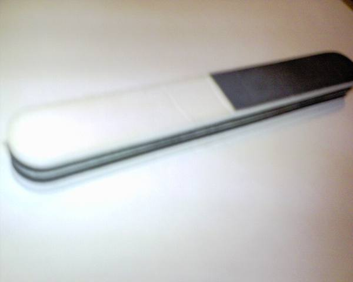 | la lime à ongles | nail file | |
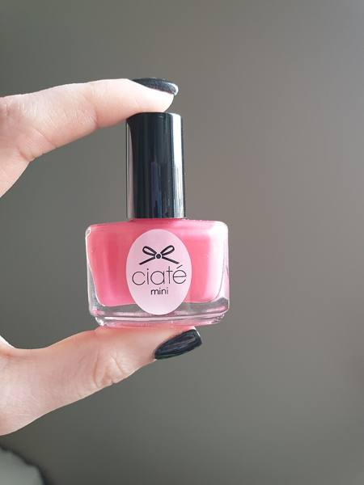 | le vernis à ongles | nail polish | |
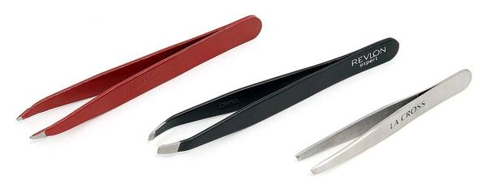 | la pince à épiler | tweezers | |
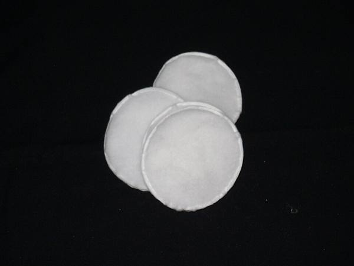 | le disque de coton | cotton pad | |
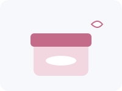 | la crème pour le visage | face cream | |
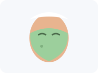 | le masque pour le visage | face mask | |
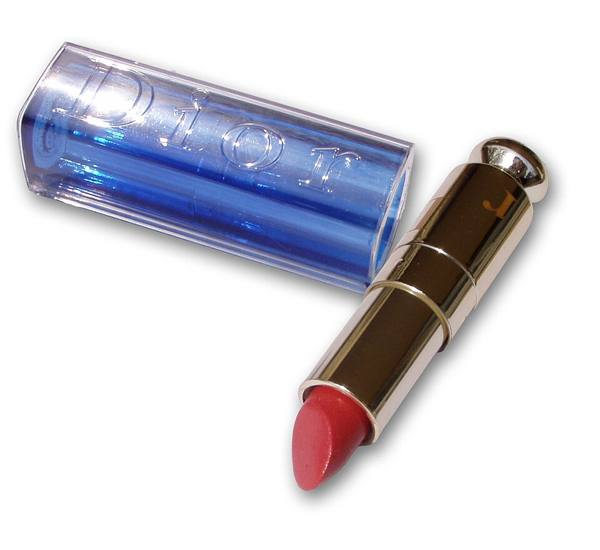 | le rouge à lèvres | lipstick | |
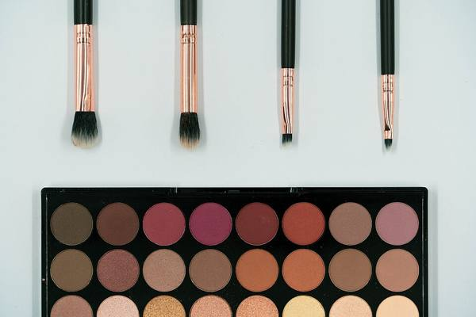 | le fard à paupières | eyeshadow | |
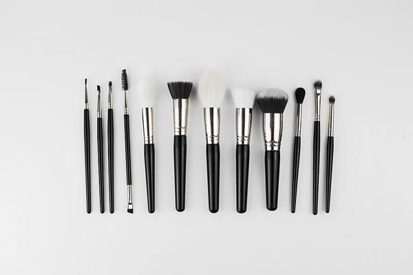 | le pinceau de maquillage | make-up brush | |
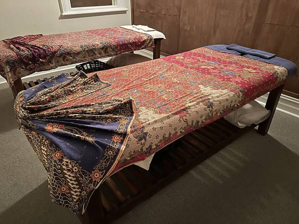 | la table de soin | treatment table | |
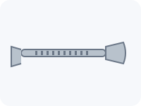 | le repousse-cuticules | cuticle pusher | |
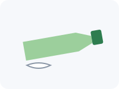 | la crème pour les mains | hand cream | |
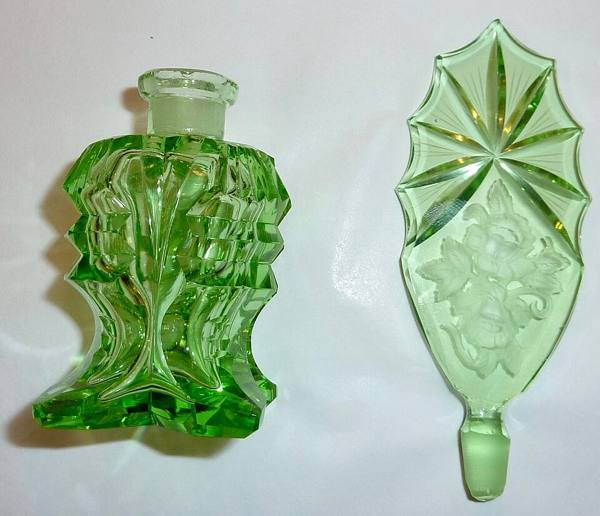 | le parfum | perfume | |
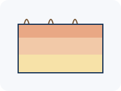 | la peau | skin | |
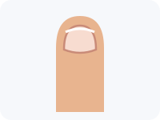 | l'ongle | nail | |
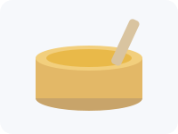 | la cire | wax |
Corrigé pour le professeur : phrases au travail
- Shape the nails with a ________. (nail file)
- Which colour of ________ would you like? (nail polish)
- Remove the make-up with a ________. (cotton pad)
- Put some ________ on your hands. (hand cream)
- Please lie down on the ________. (treatment table)
- This ________ smells of roses. (perfume)
Dans les étapes 1, 2 et 3, la bonne réponse correspond à la ligne de la liste de vocabulaire.
Crédits des images
Photos sous licence libre, issues de Wikimedia Commons, redimensionnées pour le téléphone. Dessins originaux pour les gestes et les notions.
- la lime à ongles (nail file) : photo de Wolfmankurd, licence Public domain, page du fichier sur Wikimedia Commons.
- le vernis à ongles (nail polish) : photo de Köttbulleledaren, licence CC BY-SA 4.0, page du fichier sur Wikimedia Commons.
- la pince à épiler (tweezers) : photo de Evan-Amos, licence Public domain, page du fichier sur Wikimedia Commons.
- le disque de coton (cotton pad) : photo de Evi Michailidou, licence CC BY-SA 3.0, page du fichier sur Wikimedia Commons.
- la crème pour le visage (face cream) : dessin original, Itinéraires et destinations, CC BY-NC-SA 4.0.
- le masque pour le visage (face mask) : dessin original, Itinéraires et destinations, CC BY-NC-SA 4.0.
- le rouge à lèvres (lipstick) : photo de Sjr, licence Public domain, page du fichier sur Wikimedia Commons.
- le fard à paupières (eyeshadow) : photo de geehairimages, licence CC BY 2.0, page du fichier sur Wikimedia Commons.
- le pinceau de maquillage (make-up brush) : photo de Makeupweapons, licence CC BY-SA 4.0, page du fichier sur Wikimedia Commons.
- la table de soin (treatment table) : photo de Azoma, licence CC BY-SA 4.0, page du fichier sur Wikimedia Commons.
- le repousse-cuticules (cuticle pusher) : dessin original, Itinéraires et destinations, CC BY-NC-SA 4.0.
- la crème pour les mains (hand cream) : dessin original, Itinéraires et destinations, CC BY-NC-SA 4.0.
- le parfum (perfume) : photo de Tangerineduel, licence CC BY-SA 4.0, page du fichier sur Wikimedia Commons.
- la peau (skin) : dessin original, Itinéraires et destinations, CC BY-NC-SA 4.0.
- l'ongle (nail) : dessin original, Itinéraires et destinations, CC BY-NC-SA 4.0.
- la cire (wax) : dessin original, Itinéraires et destinations, CC BY-NC-SA 4.0.
Fiche de vocabulaire à imprimer
Gros caractères (16 points minimum), en trois formats :